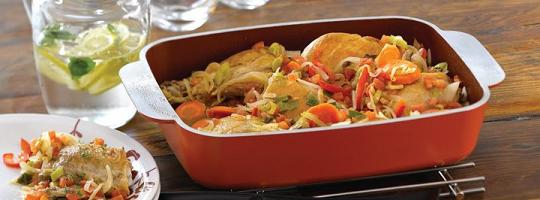

Características
Las cacerolas, sartén, ollas Essen y demás productos Essen son piezas fundidas en un solo cuerpo de aluminio de primerísima calidad, lo que las dota de una elevada conductividad del calor, permitiendo así una cocción más rápida y con un menor consumo de gas. A diferencia de las cacerolas comunes, las ollas Essen poseen un gran espesor en los laterales y fondo, lo que hace que tengan una mayor durabilidad. De hecho, una olla Essen usada correctamente te acompañará durante toda tu vida.
En su base, las ollas Essen están constituidas por aros concéntricos que funcionan como difusores del calor, permitiendo una optimización y mayor aprovechamiento del fuego.
Las ollas Essen poseen un cierre perfecto entre el cuerpo de la cacerola (ya sean pizzera, sartén, olla o cacerola), lo que favorece a la preservación del calor dentro de las piezas, y por ende una más rápida, mejor y más sana cocción. Las tapas de las ollas Essen están provistas de barreras de distribución de líquido en su interior, pensadas para que el vapor caiga en forma de lluvia una vez vuelto líquido.
En su exterior, las ollas Essen están recubiertas con esmalte o antiadherente de excelente calidad, lo que las dota de un gran sentido estético además de favorecer su preservación a lo largo del tiempo. En su interior, las ollas Essen son de aluminio pulido o revestido con antiadherente. Esta última característica, el antiadherente, es una de los máximos beneficios de las ollas Essen, ya que reduce la utilización de elementos grasos en la cocción (aceites, grasas).